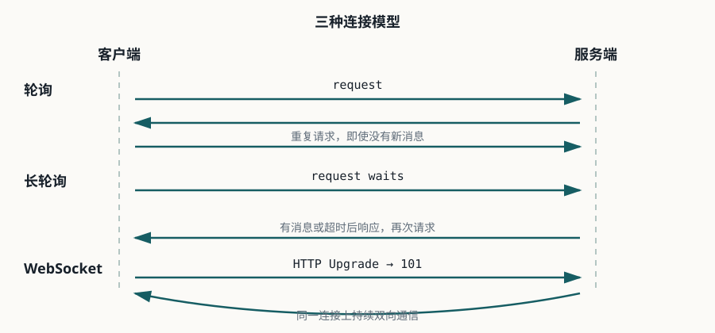

websocket-tutorial · Java 25 · Spring Boot 4.1.1 · RFC 6455
WebSocket 学习课程
从 TCP、HTTP 和 Opening Handshake 开始，逐步完成 Spring Boot、Jakarta、STOMP、MQTT、多实例和性能基准练习。
学习方式：每课只聚焦一个核心能力。先回答问题，再运行示例、抓包或测量，最后用验证证据确认是否真正掌握。
线上地址：https://zhijunio.github.io/websocket-tutorial/

课程
| 课程 | 核心能力 | 示例 |
|---|---|---|
| 0001 · Opening Handshake 与 DevTools | 理解发展背景，识别 101、Upgrade 和 Sec-WebSocket-*。 | 协议与抓包 |
| 0002 · WebSocket 帧与连接生命周期 | 理解帧、消息、控制帧、掩码和 Close。 | 协议与抓包 |
| 0003 · Spring Boot 双向消息 | 使用原生 Handler 实现回显并验证真实握手。 | 独立项目 |
| 0004 · Jakarta @ServerEndpoint 对照 | 比较 Jakarta 标准 API 与 Spring 编程模型。 | 独立项目 |
| 0005 · 多房间聊天与广播 | 建立房间状态、广播和断开清理不变量。 | G1 初版 |
| 0006 · 心跳、断线和安全边界 | 处理应用心跳、Origin、鉴权和退避重连。 | 独立项目 |
| 0007 · 推送通知与补拉 | 实现在线推送、未读通知和 ACK。 | G2 初版 |
| 0008 · 代理、网关和多实例 | 理解 idle timeout、连接归属和跨实例路由。 | Docker Compose |
| 0009 · STOMP over WebSocket | 理解 CONNECT、SUBSCRIBE、SEND、MESSAGE 和目的地路由。 | 独立项目 |
| 0010 · MQTT 桥接 | 完成 MQTT Broker、Java 后端和 WebSocket 客户端桥接。 | Docker Compose |
| 0011 · 高频小消息基准 | 测量 100 客户端、吞吐、p50/p95、错误率和资源。 | G3 基准 |
| 0012 · 结业验收与面试演练 | 用协议、代码、指标和架构权衡完成验收。 | G1/G2/G3 |
参考资料
- RFC 6455 总导读
- 详细解析一：背景、模型与分层
- 详细解析二：URI 与 Opening Handshake
- 详细解析三：数据帧与控制帧
- 详细解析四：收发、关闭与错误
- 详细解析五：扩展与安全
- 详细解析六：注册表、复用与参考文献
- WebSocket 基础速查
学习目标
目标是能解释协议差异、读懂并排查握手、完成 Java 实现，并交付 G1 多房间聊天、G2 推送通知和 G3 高频小消息基准。完整约束与验收标准见仓库中的 MISSION.md。